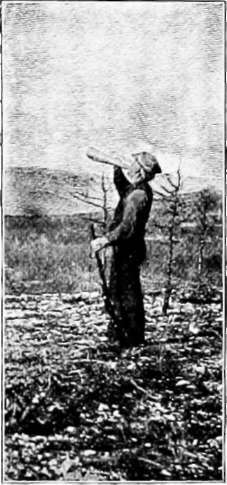

Sport In An Untouched American Wilderness. Part 3
Description
This section is from the book "Hunting", by Archibald Rogers. Also available from Amazon: Hunting.
Sport In An Untouched American Wilderness. Part 3
A most impressive exhibit of the terrific energy of the angered moose was written on a bushy mountain-side. Two bulls had met and fought. The record of the conflict was plain to all comers. A great swath had been torn down the mountain for half a mile, the uprooted bushes bearing scattered tufts of hair. In some places both moose had slid for several yards. Then there was the evidence of a complete somersault, and finally it was plain that both had run against a dead pine-stub, and knocked it down. One of the moose had dragged the end of it on his back for twenty feet; for the broken lower end, next the stump, had been carried up hill. The fight had ended right there. Two moose-tracks, in opposite directions, told of the retreat of the rival woodland monarchs.
Calling Moose.
Never can a man forget his first sight of a bull-moose in the woods. Mine came in this way: Mr. Braithwaite and I had tramped the country for a week; but while there were tracks everywhere, and we had heard several moose calling, we had only caught a momentary glimpse of one bull. In the presence of so many superior attractions, Braithwaite's musical performances had been scorned by the gentlemen moose. One evening the baffled guide, in talking the matter over before the camp-fire, said: "There is a lake about three miles back here in the mountains that I have had in my mind for ten years as a likely place to call a moose. To-morrow we will try it."
It should be explained that the bull-moose comes much more readily to the call after dark. All the Indians who attempt calling do so at night. The difficulty about this method is, that while the moose may come very near the sportsman, the latter cannot see his intended victim; and the result is, that four moose are wounded and lost for every one that is killed on the spot after dark. Braithwaite never calls at night, but trusts to his ability to outwit the moose in broad daylight.
Modern Acadian Travelling.
When the guide uttered the remark above quoted we were camped on Little Southwest Lake, a body of water about four miles long. Getting into the canoe the next morning, we paddled up to the head of the lake. On the way up we saw, half a mile away on the shore, the huge, ungainly shape of a cow-moose, swinging clumsily along close to the water's edge. She remained in sight for fully ten minutes, and then leisurely disappeared in the thicket.
Arrived at the head of the large lake, it was a good three hours' task to climb the mountain, and penetrate the dense thickets of spruce and cedar which barred the approach to the small lake of which we were in search. At last we saw the welcome gleam of water through the trees, and pushed on to the brink. A great flock of black ducks rose quacking from the surface, and in three minutes had crossed over to the larger body of water which it had taken us so many toilsome hours to leave behind. We sat for a few minutes in the bright October sunshine, with our legs dangling over the steep bank, carefully scanning every bush and rock and stub around the shore. There was no ripple on the water. Around us rose the mountain-sides, resplendent in their autumnal attire. The repose of the wilderness was over everything. One would have thought there was not a living creature within hearing.
Placing the birch-bark horn to his lips, the guide gave the long, wailing bellow of the cow-moose, not loud, but in the same coaxing tone which characterized the genuine article, as we had heard it vibrating in the evening air two or three days before. The echoes had not died away when, across the narrow water, from a thicket nearly opposite us, came the never-to-be-forgotten hoarse grunt of a bull, repeated every few seconds as the animal rushed toward the water's edge. In less than a minute we caught sight of his broad antlers, glistening in the sun, as he pushed impatiently through the thick branches. Then he broke through the bushes; and as he stood by the water's edge, intently looking and listening, his head thrown high in the air, it seemed to me that he appeared ten feet tall.
It was as easy a shot as one could ask for. Any kind of a marksman could hit a man's hat at that distance, and the animal's black bulk stood out against the rifle sight as big as the front door of a house. One glance was enough; and at the report of the heavy rifle the moose wheeled suddenly about, and plunged along the shore of the lake for fully fifty yards. While he was covering that distance I fired four times more, emptying the magazine of the rifle. Then the moose rushed up the bank, and disappeared in the forest.
A Load of Antlers.
Five minutes later two panting and wild-eyed men, splashed with mud and water, had run clear around the head of the little lake, and reached the point where the moose first appeared.
"Do you think I hit him?" I anxiously inquired.
"Yes, I think you broke his leg," responded the guide; "but it may be an all-day chase to catch up with him."
Full of anxiety over the uncertainty of the result, I climbed directly up the bank, while Braithwaite followed the more circuitous trail through the bushes. I had not gone fifty feet when, in a little opening in the balsams and spruces, I suddenly came upon the moose, standing rigid among the bushes, within fifteen feet of me. The bristles stood a foot high on his shoulders; his threatening antlers could easily accommodate two men about the size of those in his immediate vicinity, and he was not a pleasant sight to see. But he was in more danger than I was; for the instant I saw him the rifle again spoke, and the poor brute fell crashing to the ground. Four of the bullets had struck him, all in the vicinity of the breast and shoulder, and two had gone clean through him.
Continue to:
- prev: Sport In An Untouched American Wilderness. Part 2
- Table of Contents
- next: Sport In An Untouched American Wilderness. Part 4